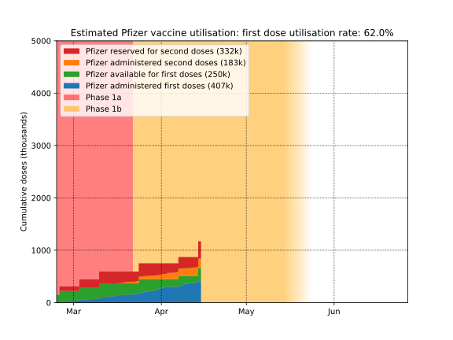

Australian COVID-19 vaccination rollout
Last updated: 2021-04-25-13:20 Melbourne time
Contents
Daily doses by state/territory
Below is a plot of daily vaccine doses administered in Australia, by state/territory. The data is smoothed using Gaussian smoothing with σ=2 days to better show the trend.
Projected doses are based on expected supply, the assumptions in the Estimated utilisation section below, and the assumption that 10% of available doses each day are utilised: administered as first doses or reserved for second doses. That is in effect assuming that we will always be about 10 days away from exhausting available doses. This projection reflects current supply expectations and is subject to change.

Cumulative doses
Below is a simple plot of cumulative doses in Australia over time. Australia aims to vaccinate all 20M adults (requiring 40M doses) by the end of 2021.
Projected doses are based on expected supply, the assumptions in the Estimated utilisation section below, and the assumption that 10% of available doses each day are utilised: administered as first doses or reserved for second doses. That is in effect assuming that we will always be about 10 days away from exhausting available doses. This projection reflects current supply expectations and is subject to change.

Longer-term projections
Below is a possible scenario for the vaccination program over the course of the year. This assumes that we keep up with supply, administering 10% of available first-doses per day until 20M people have been vaccinated, with a maximum of 8M people receiving the AstraZeneca vaccine. Expected supply of the Pfizer vaccine is 40M doses over the year, arriving according to a schedule hinted at in comments from Greg Hunt, which whilst not very specific, are enough to get a rough idea of how things might proceed over the year. Supply of the AstraZeneca vaccine is assumed to be 670k per week, which is probably an underestimate as it is expected to reach 1M per week "soon". Supply of Pfizer is assumed to be 170k per week until mid-May, then 250k per week until July, then 600k per week until October, and then at whatever rate is required to reach 40M doses by the end of the year.


Estimated utilisation
Below is a plot of the estimated status of each vaccine dose in Australia. How many doses are in people's arms, in reserve, or available? This helps show whether administration of doses is keeping up with supply. Since the government has not published data to determine this exactly, this estimate is based on a number of assumptions:
- That the number of Pfizer and AstraZeneca first doses administered on a given day is in proportion to the number of available doses of each type of vaccine on that day.
- That 50% of Pfizer supply is held in reserve for second doses, administered exactly 3 weeks after the first dose.
- Prior to mid-April, that 50% of AstraZeneca supply is held in reserve for second doses. After mid-April (when the government became confident enough in local supply to maintain a smaller reserve), that a reserve is maintained with a number of doses equal to half of all outstanding second doses. These second doses are administered exactly 12 weeks after the first dose.
- That doses becoming available in a given week (supply data is only available at the 1-week level) become available at the end of that week.

Estimated utilisation by vaccine type
Below is the same utilisation estimates as in the above plot, but separated by vaccine type: AstraZeneca vs Pfizer.

Details
Source for vaccine supply and expected supply: covid19data.com.au
Source for dose numbers: covidlive.com.au
Plots by Chris Billington. Contact: chrisjbillington [at] gmail [dot] com
Python script for producing the plots is available on GitHub.